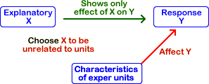

If you don't want to print now,
Reason for conducting an experiment
An experiment looks for a causal relationship between a response and one or more explanatory variables.
Experimental units
Experiments are generally conducted on a set of experimental units. Depending on the type of experiment, these units could be people, animals, trees, areas in a field, shops in a retail chain, ...
In the experiments that we will examine here, a single response measurement is made from each experimental unit.
Factors and treatments
The researcher has control over some aspect of each unit. These controlled characteristics are explanatory variables and are called factors in the context of an experiment. The different values of the controlled characteristics are called experimental treatments.
Experimental design
The decision about which treatment is applied to each experimental unit is called the experimental design.
Differences between experimental units
In practice, it is usually impossible to conduct experiments with experimental units that are identical. The experimental units usually have characteristics that vary from unit to unit.
These differences between the experimental units result in variability in the response measurements that are made from them, even if all receive the same treatment.
Bad experimental design
If the treatments are allocated to experimental units in a way that is associated with their naturally varying characteristics, the apparent relationship between the treatments and the response can be distorted.
This is similar to the effect of lurking variables in observational studies.

Good experimental design
Since variability in the experimental units is usually unavoidable, we cannot prevent their effect on the response. However it is possible to allocate treatments to the units in a way that either eliminates, or at least reduces, the relationship between the treatment, X, and characteristics of the experimental units.

Good experimental design can avoid the potential effect of lurking variables.
Confounding
The design of an experiment may make it impossible to disentangle the effects of the treatment and other characteristics of the experimental uits. If the treatment is perfectly correlated with another variable, the effects of the two variables cannot be distinguished. The treatment and variable are then said to be confounded.
It is particularly important to avoid confounding in an experiment.
In an experiment, treatment A was applied to 10 experimental units in 2010 and treatment B was used on 10 similar units in 2011.

It is impossible to tell whether the higher mean response for treatment A than treatment B was caused by the different treatments or other differences between the two years.
Avoiding lurking variables
An important goal of experimental design is to minimise association between allocation of the treatments and characteristics of the experimental units.
If the varying characteristics of the experimental units are understood and measured before the experiment is conducted, treatments can be allocated to ensure that there is no association. (See the later page about blocking in experiments.)
Randomisation
When the differing characteristics of the experimental units are unmeasured, association between them and the treatments can be minimised by randomly allocating treatments to the experimental units. This is called randomisation of the treatments and the experimental design is called a completely randomised design.
Randomisation does not guarantee that there will be no association between the treatments and characteristics of the experimental units — by chance, there may be some association. However...
Randomisation means that is unlikely that such lurking variables will affect the conclusions.
Mechanics of randomisation
The simplest way to randomise allocation of treatments to the experimental units is:
Finding the random permutation is fairly easy in a spreadsheet such as Microsoft Excel:
This gives a random permutation of the numbers 1 to n.

Causes of variation
In a completely randomised experiment,
Distinguishing the treatment effect and random variation
To find the effect of the treatments on the response, it is essentionl that we can distinguish it from random variation.
There must be enough data to estimate random variation separately from variation caused by the treatments.
Replication involves repeat measurements for each treatment. The variation within each treatment is all random variation.
Understanding the amount of random variation is necessary before you can interpret the effect of the treatments.

Known differences between the experimental units
When nothing is known about the differences between the experimental units before the experiment is conducted, we can do no better than to randomise allocation of treatments to the units.
This design can be improved when more is known about the differences between the experimental units.
Randomised block designs
Ideally all experimental units are virtually identical (minimum random variation) but in practice they are often highly variable. A better design groups similar experimental units into blocks.
In a randomised block design, a separate experiment is conducted within each block with treatments randomly allocated to its experimental units. Although all data are analysed together, the lower random variation within each block means that differences between the treatments can be more accurately estimated.
Simple block design
Although it is not essential,
If possible, researchers usually try to define blocks that have the same size and use each treatment the same number of times within each block.
With equal replicates for all treatments in every block, each treatment mean uses the same number of values in each block, so comparisons between treatment means are not affected by differences between the blocks.
| Block 1 | Block 2 | Block 3 | Block 4 | Mean | |||||
|---|---|---|---|---|---|---|---|---|---|
| Treatment A |
|
|
|
|
2.608 | ||||
| Treatment B |
|
|
|
|
2.116 |
In the example above, the experimental units were grouped into blocks of six, with each treatment randomly allocated to three within each block. Even though the response values are much higher in Block 1, this affects both treatment means equally, so the difference between them is unaffected.
Comparison of completely randomised and randomised block designs
Grouping experimental units into blocks of similar units and using a randomised block design gives more accurate estimates of the treatment effects than a completely randomised design that ignores the blocks.